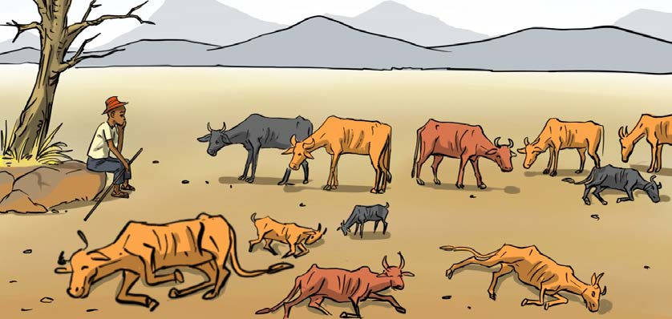

yaliyokatwa miti na kupanda miti katika maeneo yasiyo na miti. Vilevile, jamii zijengewe uwezo kuhusu upasuaji wa mbao endelevu kwa kutumia misitu ya kupanda na elimu kuhusu athari za upasuaji mbao usiozingatia taratibu. Aidha, jamii inapaswa kutumia vifaa mbadala katika ujenzi na utengenezaji wa samani ili kupunguza mahitaji ya mbao.
Uharibifu wa mazingira unavyoathiri tabianchi
Kazi ya kufanya namba 3
Chunguza Kielelezo namba 13, kisha jibu maswali yanayofuata.

Kielelezo namba 13: Mifugo iliyoathiriwa na mabadiliko ya tabianchi